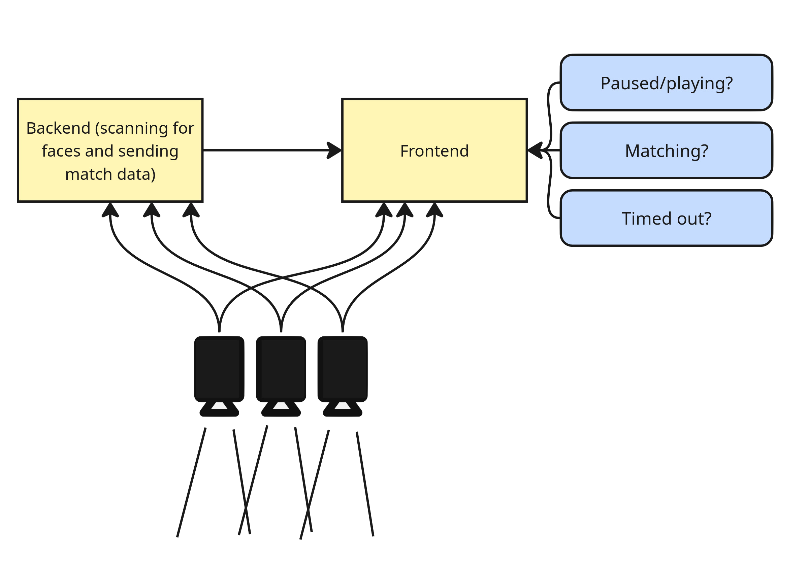
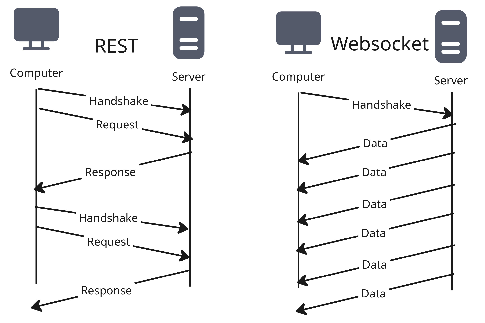
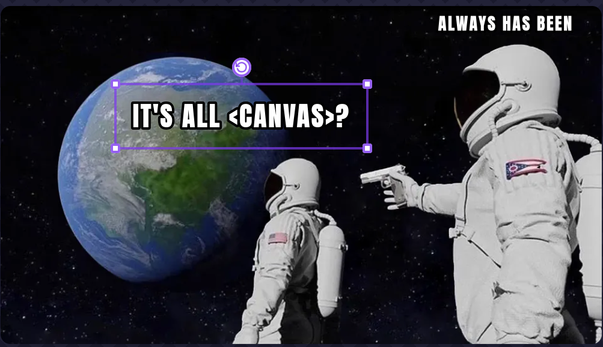
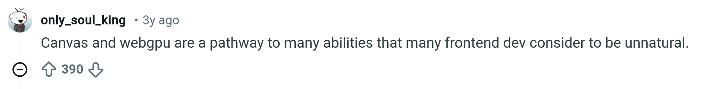
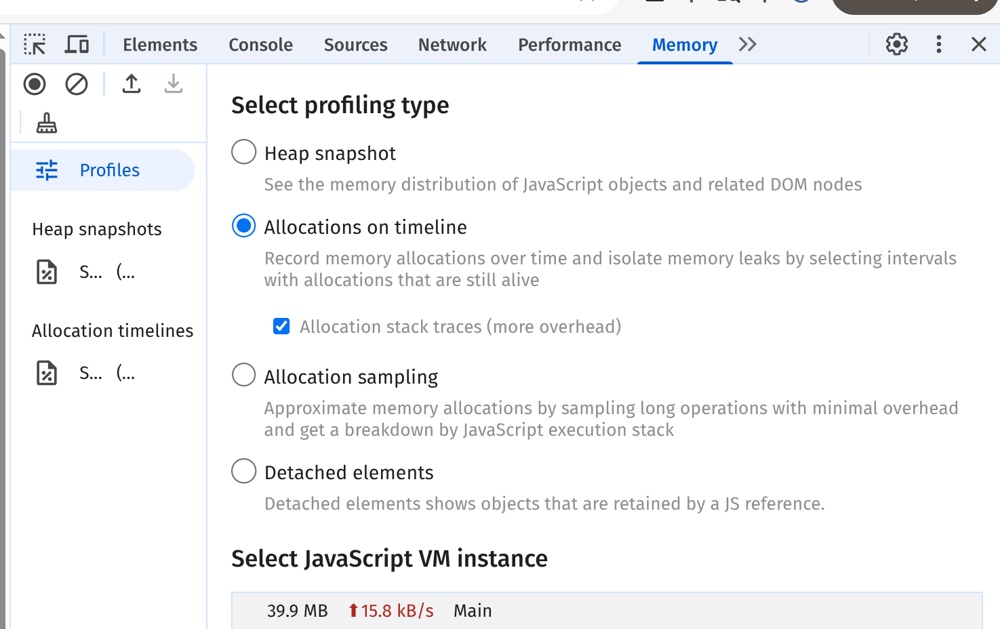
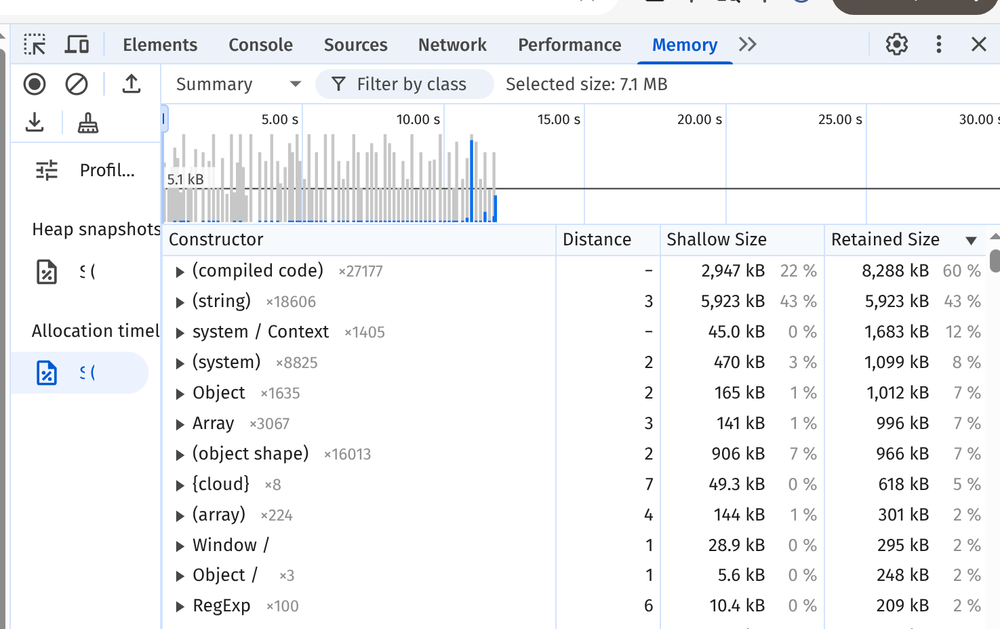

What this isn't:
- CSS animations
About me
- Software engineer at martech company
- Occasional freelancer for projects where I have bad ideas

So why React?
Cons:
- Virtual DOM means React can't get this performance out of the box
- No library exists that is flexible enough for this use case
Pros:
- React makes managing complex state easy
- Free GPU acceleration in modern browsers
- If all you have is a hammer everything is a nail I guess?
How to get the most performance out of React, with no animation libraries
- Websockets for moving data fast
- RequestAnimationFrame for better animations
- Drawing with HTML Canvas
- Debugging tips
But first....
Live demo time

credit: Marshall Ruse
Websockets!
- Open connection once, persist for life of the app
- Reduces bytes transferred by ~80%
- Don't think too hard about it, just use a library
Why it works

Quick note on websocket libraries
react-use-websocket
- 1,300 stars on github
- doesn't *&#$% work
react-use-websocket-lite
- 17 stars on github
- works perfectly
- also 100kb lighter
The rude way to animate
setInterval(()=>draw(),1000/60)
- Doesn't take priority over other browser tasks (so can stutter or skip)
- Is not guaranteed to run in the interval specified, it's just a best estimate
- MIGHT keep chugging away even if the user abandons the tab
The polite way to animate
requestAnimationFrame(draw)
- Synced to display refresh rate (magic??)
- Will DEFINITELY automatically pause if user leaves
Basic syntax for requestAnimationFrame
function step() {
//animation logic goes here
requestAnimationFrame(step);
}
requestAnimationFrame(step);
requestAnimationFrame with React, for an animation that runs indefinitely
useEffect(() => {
let animationFrameId;
const step = () => {
//animation logic here
animationFrameId = requestAnimationFrame(step);
};
step();
return () => {
cancelAnimationFrame(animationFrameId);
};
});
HTML Canvas
- The backbone of drawing on the Web
- Draw lines, shapes, text, images
- Used in popular libraries like Phaser.js, p5.js


const Canvas = ({props})=>{
const canvasRef = useRef(null);
const [context, setContext] = useState(null);
useEffect(() => {
if (canvasRef.current) {
setContext(canvasRef.current.getContext("2d"));
}
}, []);
return <canvas ref={canvasRef}>;
}context.clearRect(0, 0, canvasWidth, canvasHeight);
context.beginPath();
context.moveTo(startX,startY);
for (const pointPair of listOfPoints) {
context.moveTo(
pointPair.x
pointPair.y);
}
context.stroke();
const canv = document.querySelector("canvas");
const ctx = canv.getContext("2d");
ctx.strokeStyle="blue";
const myPoints = [{x:10,y:220},{x:125,y:10},{x:250,y:220}]
ctx.beginPath();
ctx.moveTo(250,220);
for (const point of myPoints){
ctx.lineTo(point.x,point.y);
}
ctx.stroke();const canv = //same stuff as before
let animationFrameId;
const draw = ()=>{
ctx.clearRect(0,0,300,300);
const myPoints = //do math on points
ctx.beginPath();
for (const point of myPoints){
ctx.lineTo(point.x,point.y);
}
ctx.stroke();
animationFrameId = requestAnimationFrame(draw);
}
useEffect(() => {
const draw = () => {
if (facesRef.current) {
context.clearRect(0, 0, canvasWidth, canvasHeight);
const faces = facesRef.current;
context.beginPath();
for (const face_point of faces) {
context.lineTo(
face_point.x,
face_point.y,
);
context.stroke();
}
}
}
};
let animationFrameId;
const renderAndRequestNewFrame = () => {
draw();
sendMessage("{'sendNext':'frame'}");
animationFrameId = requestAnimationFrame(renderAndRequestNewFrame);
};
renderAndRequestNewFrame();
return () => {
cancelAnimationFrame(animationFrameId);
}, [facesRef, context, sendMessage]);
Memoize This Component
What is React.Memo?
- Replacement for `componentShouldUpdate` in the days of class components
- Without memo: When parent rerenders, children re-render
- With memo: children only re-render when their props change (React does shallow prop comparison tho)
- Don't overuse: React now has to calculate whether to re-render the component
- React 19+ with React Compiler might handle this for you?
Basic syntax for Memo
const MyComponent = ({props})=>{
/*some very cool stuff here*/
return (<>Very Cool Component {props.name}<>)
}
export default React.memo(MyComponent);
Work with, not against, Javascript
When Loop Performance Matters
myArray.forEach(item=>doSomethingWith(item));
//is SIGNIFICANTLY slower than
for (const item of myArray){
doSomethingWith(item)
}
Some benchmarks put for..of as more than twice as fast as .forEach.
(I tried my own benchmark and forEach crashed my computer 🤷♀️)
Useful debugging tools


How to use .time() and .timeEnd()
console.time("my expensive operation")
//do something expensive
console.timeEnd("my expensive operation")my expensive operation: 15801ms - timer ended
We did it!
Thank you
Contact me
Download slides/source code